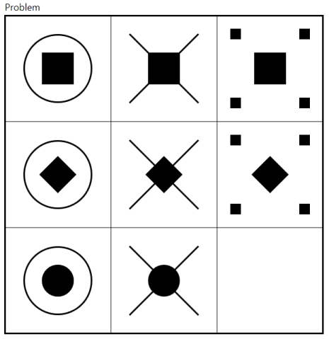

What is Ravensolver?
RavenSolver is a fully automated generative solver for Progressive Matrices Problems.
It was developed by me and Victor Hagelbäck as our Master's Thesis project.
It takes a Progressive Matrix as its input and it will (hopefully) produce the solution.
RavenSolver is developed in C# and is available for Windows.
What are Progressive Matrices?
Progressive matrices are a widely used format of abstract reasoning test.
The test items consist of 2x2 or 3x3 grid of pictures, with the bottom-right cell left empty.
The task is to pick the picture completing the pattern from eight possible provided alternatives.
This is a sample progressive matrix:
The most known standardized progressive matrix based tests are the Raven's Progressive Matrices. Ravensolver was originally developed to solve the Standard Progressive Matrices Sets C-D-E and it solves 28 out of 36 problems.
What does Ravensolver do?
Ravensolver automagically solves progressive matrices without needing the answer alternatives at all!
In short Ravensolver builds a representation graph structure for the problem and computes the solution. Within the program, you can see both the representation and the computation sequence.
For more information, please read our thesis manuscript or the journal article we produced from it.
Installation and Usage
Please refer to our ReadMe.